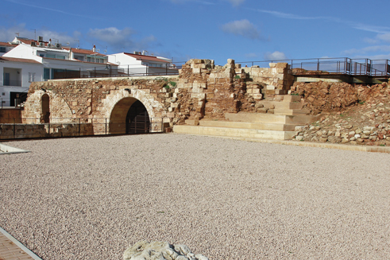

Fornells, mar y gastronomía
Hablar de Fornells es hablar de mar. Su puerto ha albergado, desde tiempos pretéritos, numerosas naves. Los primeros documentos históricos se remontan al año 1300 y relatan la llegada de varias embarcaciones genovesas. En esa época, todavía no había núcleo poblacional.
A partir del siglo XVI, Menorca se fortifica para protegerse de los ataques del enemigo. Se construye entonces la fortaleza de San Antonio y las gentes que trabajan en su edificación quedan a vivir en los alrededores. Posteriormente, se erige la capilla de San Antonio. Lentamente, Fornells va creciendo, y se establecen los apellidos característicos que aún hoy persisten: Fuxá, Garriga, Roselló, Riera, Sans…
Más adelante, se produce la dominación británica y la guarnición militar de Fornells pasa a ser extranjera. La población autóctona del arrabal establece lazos con los forasteros y la población continúa aumentando.
En 1780, el capellán de las tropas de la guarnición del castillo de San Antonio describe así a los fornellers: "Los pocos habitantes que viven cerca del castillo de San Antonio son muy pobres. Sus casas, construidas con algunas piedras y vigas; pero a pesar de todo esta gente es muy alegre. Los de aquí, han de traerlo todo. Y deben de pensar más bien en obsequiar a esta gente tan bondadosa y honrada. Todo lo que ellos tienen, se comparte con mucho gusto. Incluso, quiero explicar cómo un pobre ciudadano del pueblo me acogió y me regalaba un poco de sal y pasto para mi caballo".
En el siglo XVIII surgen nuevos comercios, como la extracción de sal. Eso ocurre con el gobierno británico, cuando éste concede un terreno del puerto de Fornells para establecer allí unas salinas, que son regentadas por una sociedad de griegos.
Después de varias dominaciones británicas y una francesa, Menorca vuelve a manos españolas por el Tratado de Amiens, siendo rey Carlos III. El monarca ordenará, poco después, destruir las fortalezas de San Felipe y de San Antonio, en una discutible decisión.
 Fornells continúa fuertemente vinculado al mar. Es, entonces, la única población menorquina que puede considerarse típicamente marinera. El archiduque Luis Salvador de Austria relata en sus crónicas que los pescadores de Fornells "pasan por ser los más atrevidos y temerarios, y a raíz de esto, muchos de ellos desaparecían en el mar."
Fornells continúa fuertemente vinculado al mar. Es, entonces, la única población menorquina que puede considerarse típicamente marinera. El archiduque Luis Salvador de Austria relata en sus crónicas que los pescadores de Fornells "pasan por ser los más atrevidos y temerarios, y a raíz de esto, muchos de ellos desaparecían en el mar."
Con el paso del tiempo, los fornellers se especializan en la captura de langostas. A finales del siglo XIX, Fornells es un lugar frecuentado por personas procedentes de otros lugares de Menorca. Lo cuenta también el archiduque Luis Salvador al afirmar que: "… acude mucha gente de Mahón, cuando éstos desean pasar un día festivo y acompañarlo de una buena comida de pescado fresco y de excelente calidad." Lo que no podían imaginar sus habitantes era el papel que el turismo iría cogiendo paulatinamente, hasta el punto de cambiar su economía.
Lentamente, empiezan a llegar visitantes de otros países. En los años 30, llega una pareja de artistas, turistas incipientes, desconocidos en la isla pero que destacarán en Europa: Hans Hartung y su esposa Ana Eva Bergman. Ella hace una minuciosa descripción de la época previa a la guerra civil y dice así: "los pescadores llevan una vida ideal, cada uno tiene una casita propia con jardín, y algún trozo de tierra.” Ana describe que viven bien, procurando que ninguno de ellos viva en la miseria. Como anécdota, menciona que se hacen rifas en beneficio de un pobre.
En aquellos días, existe una gran cohesión social y consciencia de pueblo, reforzada quizás por la dificultad añadida de encontrarse muy aislados del resto de poblaciones de Menorca.
Fornells, al igual que el resto de la isla, experimenta grandes cambios a finales del siglo XX con la explosión del turismo. Aparecen nuevos negocios y se construyen nuevos núcleos de urbanizaciones residenciales.
 El pueblo cambia, tanto en su forma de ser como en su modo de subsistencia. Sus habitantes afirman, convencidos, que con el turismo han ganado mucho en calidad de vida y bienestar económico; si bien reconocen, sinceros, que han perdido también mucho a nivel humano, en las relaciones entre vecinos, que han ido enfriándose. Es la otra cara de la moneda.
El pueblo cambia, tanto en su forma de ser como en su modo de subsistencia. Sus habitantes afirman, convencidos, que con el turismo han ganado mucho en calidad de vida y bienestar económico; si bien reconocen, sinceros, que han perdido también mucho a nivel humano, en las relaciones entre vecinos, que han ido enfriándose. Es la otra cara de la moneda.
Podríamos decir que, a nivel sociológico, los fornellers añoran esa época en la que las relaciones sociales eran tan intensas. Algunos ancianos mantienen aún vivo en sus sentidos el recuerdo de esa época, al rememorar escenas de madrugada, cuando el olfato se impregnaba con el olor del pan que se cocía en los dos hornos del pueblo. Y un pescador, emocionado, narra otra escena de antaño: "era un día de temporal en medio del mar, con mi tío. Los relámpagos comenzaron a caer… y empezó a llover… y más lluvia y lluvia… y más relámpagos. Una tormenta intensa. De repente, un rayo cayó a pocos metros de la barca". Para seguidamente describir el olor intenso a quemado que ha calado en su memoria y permanece allí, perenne.
Fornells, pueblo de pescadores, de origen humilde. Sus habitantes no son gentes cuyos nombres aparecen en los libros de Historia, sino aquellos que, un día tras otro, han ido haciendo historia. Lo cierto es que cada forneller tiene algo que contar, siempre interesante, como lo es la lucha contra el mar, para llegar a puerto; o la de proporcionar sustento a su familia; o las historias de salvamentos en el mar embravecido…
A los lectores de esta guía turística os sugiero que, al pasear por Fornells, intentéis aproximaros a la vida de este pueblo, haciendo un viaje temporal, imaginando cómo vivían esas gentes hace 80-100 años. Una población de pescadores, donde todos tienen historias y vivencias en el mar, a veces duras, con muertes y tragedias. Aunque eso, hoy en día, que vivimos en una sociedad opulenta y de bienestar, cueste mucho recordar. Pero nuestro origen es humilde, sí. Y sencillo. Lleno de vida. Somos así.
Disfrutad de Fornells.